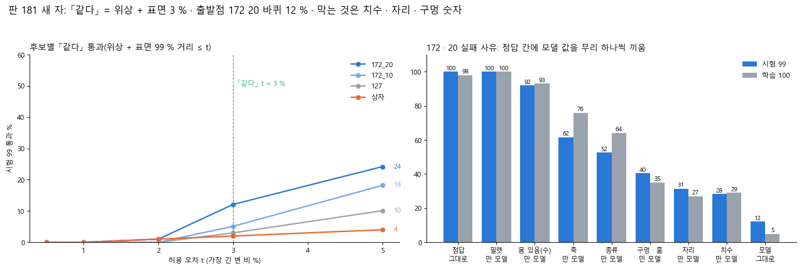

실험 m2_tr0181_h000_새자
181 새 자 — 부피 IoU 하나 대신 「같다」를 무엇으로 잴까 (11-10 · 자181.py · 손으로 정리 · 학습 없음)
분석
한 줄로
물음: 부피 IoU 하나로는 얇은 부품이 0 점이 되고 구멍 메운 답이 통과하고 평균 붕괴를 늦게 봤다. 「같은 물건인가」를 무엇으로 재야 하나?
답: 「같다」 = 덩어리 · 구멍 수가 정답과 같고, 양쪽 표면 거리의 99 % 분위가 부품 가장 긴 변의 3 % 이하. 이 자로 우리 생성기 시험 99 를 다시 재니 172 20 바퀴 12 % · 127 3 % · 상자 하나 2 % 였고, 막는 것은 치수 · 자리 · 구멍 숫자였다.
왜 이 판을 했나
172~180 을 부피 IoU 하나로 돌리다 주먹구구가 됐다(사용자 「원점에서 다시」). 사용자: 「IoU 를 포함하는 다른 메트릭 · 시각적인 것」 · 「우리가 만든 복잡한 것들에 대해 0.9」. 대상은 조립124(몸 1~6 을 붙여 합친 우리 부품 생성기) 시험 12000~12099(그림 없는 12084 빼고 99).
바꾼 것 하나
자. 조사(서브 에이전트 셋 · 로컬 보고서)에서 부피 IoU 는 사람 판단과 순위 상관 0.34 · 사람끼리도 80~91 % 만 일치 · VLM 판정은 거의 찍기. 그래서 사람 O/X 로 맞추려던 계획(시트 6 장)은 사용자 결정 「내 눈도 100 점이 아님 · 메트릭으로」로 버리고, 허용 오차로 정의했다(공학의 공차와 같은 생각). 정답과 예측은 같은 틀에 놓는다(각자 상자로 맞추던 옛 결함 없앰).
결과

| 시험 99 | t 1 % | 2 % | 3 % | 5 % | 위상 같음 |
|---|---|---|---|---|---|
| 172 · 20 바퀴 | 0 | 1 | 12.1 | 24.2 | 62.6 |
| 127 | 0 | 0 | 3.0 | 10.1 | 52.5 |
| 상자 하나 | 0 | 1 | 2.0 | 4.0 | 58.6 |
허용 오차 그림에서 3 % 안쪽에서 떨어진 쌍은 눈으로 똑같았고 5~10 % 부근부터 차이가 보였다. 사용자가 3 % 로 정함(뒤에 tr182 · 183 을 거쳐 주 목표는 5 % 「모양 맞음」 · 3 % 는 보조로 바뀜).
왜 이렇게 나왔나
확인한 것
- 정답 칸을 그대로 지으면 「같다」 시험 100 % · 배운 부품 98 % — 칸 형식은 모양을 다 담는다.
- 무리 하나씩 모델 값: 치수 28 % · 자리 31 % · 구멍 · 홈 40 % · 종류 52 % · 축 62 % · 몸 수 92 % · 필렛 100 %. 배운 부품에서도 비슷하다(모델 그대로 5 %).
- 그림 크기 기준은 통일돼 있다: 부품 가장 긴 변 = 116 px(98 부품 10~90 % 115.3~117.3).
- 위상(구멍 수)만으로 떨어진 부품은 0 — 구멍을 틀린 부품은 표면 거리에서도 이미 떨어져 있었다. 구멍 수 셈은 몸 사이 틈에 예민하다.
짐작 (아직 확인 안 함)
- 숫자가 안 맞는 것은 loss 가 모양이 아니라 칸 번호끼리 숫자를 견주기 때문일 수 있다.
한계
- 긴 변 비라 얇은 판의 두께 오차를 놓친다 · 막힌 구멍은 위상에 안 잡힌다.
- 모서리 칸은 합친 몸 이음에서 메시가 끊겨 빠진다.
배운 것과 다음
막는 것은 문법이 아니라 숫자(치수 · 자리 · 구멍)다.
- 학습량이 막나? → tr182.